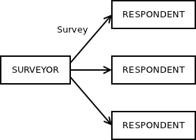
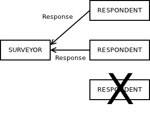
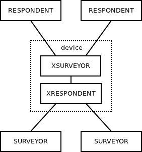

"Survey" is a well established pattern both in real world and in distributed computing.
Think of census. You send census forms to everyone, collect the results and move on with computing statistics or whatever.
In distributed computing, the common usage of survey pattern is service discovery. You ask a generic question not aimed at a particular peer: "Are there any services out there?" Then you collect the responses ("I can process payments!", "I can render images!", "I can add two integers!" etc.) Then you use the map of services available on your network as needed by your application.
In business world, survey pattern is used in auctions. You start with: "I want to sell this item. Please, give me your quotes!" Then you wait for quotes and select the best one among them. Alternatively, you may re-iterate: "The best offer so far is $250. Anyone wants to bid more?"
Other way round, you may want to run a tender: "We want to build a dam on Ob river. Please, send us your proposals." Then you collect the proposals. Then you choose the company run by your wife's cousin.
Whatever the case, "survey" pattern has wide range of uses. However, unlike "request/reply" (HTTP, RPC, JMS queues etc.) or "publish/subscribe" (JMS topics, multicast etc.) I've never seen it explicitly implemented in any messaging product.
What I've seen a lot of though is people implementing survey pattern by hand. The algorithm usually looks like this: Get a list of peers (N of them). Send the survey to each peer. Wait for N replies. Proceed.
Obviously, this naive implementation doesn't work very well: What if one of the peer fails before responding? The algorithm would be stuck forever! What if we want to use multicast to distribute the survey? Then we have no idea about how many peers there are and how many responses should we thus wait for. What if I am interested only in the first response and don't care about the rest? What if I don't want to respond to the survey for whatever reason? Is there a way to opt out? What if I do two subsequent surveys and I get a delayed response from first survey when already processing the second survey? Etc.
To address these issues new "Survey" pattern is implemented in the recent release 1.1.0 of Crossroads I/O.
It involves two new socket types types: SURVEYOR and RESPONDENT. The survey itself happens in two steps.
First, the survey is distributed by the surveyor to all the respondents in the topology:

Then the responses are routed back to the original surveyor:

Note the failed respondent at the bottom right. The respondent process may have crashed. Or maybe network was down. Or the survey was dropped because of queue overflow. Or the respondent have simply chosen not to participate in the survey.
To handle these kinds of issues surveyor can set a timeout associated with the survey. When it sends the survey it starts waiting for the responses. It processes any responses it gets. Finally, the timeout is hit. No more responses will be received. Surveyor application can move on to other tasks.
Let's have a look at an example. It implements a simple service discovery using survey pattern. What follows is the surveyor application. It's written in C so the code is a bit long-winded. In a higher-level language only few lines of code would be required:
#include <xs.h>
#include <stdio.h>
int main ()
{
void *ctx = xs_init ();
void *s = xs_socket (ctx, XS_SURVEYOR);
xs_bind (s, "tcp://*:5555");
int timeout = 1000;
xs_setsockopt (s, XS_SURVEY_TIMEOUT, &timeout, sizeof (timeout));
while (1) {
xs_send (s, "What service do you provide?", 29, 0);
printf ("\nFollowing services are available:\n");
while (1) {
char buf [100];
int nbytes = xs_recv (s, buf, sizeof (buf), 0);
if (nbytes < 0 && errno == EAGAIN)
break;
printf ("%s\n", buf);
}
}
xs_close (s);
xs_term (ctx);
return 0;
}
First, note that surveyor binds to a TCP port. This allows respondents to connect to the surveyor, while surveyor itself can remain agnostic about actual number and/or location of the respondents.
Second, timeout for the survey is set to 1000 milliseconds (1 second). This is more than sufficient on a local area network, where latencies are measured in microseconds. However, on wide area network, especially if high latency (satellite or similar) links are involved you may wish to make the timeout longer.
After setting up the topology, surveyor sends a survey. This is just an example application so the survey doesn't contain any meaningful data. It is just a placeholder for actual survey (""What service do you provide?").
Once the survey is sent to the respondents, surveyor application starts waiting for responses. It may get many responses, thus the loop. It fetches one response at time, it prints it out and starts waiting for the next response.
Finally, xs_recv() fails with EAGAIN error which means that the survey timeout have expired. We may exit the loop and proceed with other work. Given that this is just an example application, there's no other work to do, so the program just starts a new survey.
When you compile and run the program you'll see this on the console:
$ ./surveyor
Following services are available:
Following services are available:
Following services are available:
New line appears each second. Each of them represents one survey with no responses received. Obviously, we can't get any responses because we don't have any respondent applications yet. So, let's move to the respondent code:
#include <xs.h>
int main ()
{
void *ctx = xs_init ();
void *s = xs_socket (ctx, XS_RESPONDENT);
xs_connect (s, "tcp://127.0.0.1:5555");
while (1) {
char buf [100];
int nbytes = xs_recv (s, buf, sizeof (buf), 0);
xs_send (s, "payments: tcp://192.168.0.111:9500", 35, 0);
}
xs_close (s);
xs_term (ctx);
return 0;
}
This is even simpler than surveyor program.
Respondent opens a socket and connects to the surveyor application. Then it enters the event loop, waiting for surveys to answer.
When a survey is received, it sends a response. To make the example look a little bit more realistic the response includes both service name and the endpoint the service should be available at. (Clearly, it's just an example, so we don't implement the service itself. Let's just pretend that we do.)
Assuming that the surveyor is still running, we can compile and run the respondent. Here's what we'll see in the surveyor's console window:
Following services are available:
Following services are available:
payments: tcp://192.168.0.111:9500
Following services are available:
payments: tcp://192.168.0.111:9500
Nice. Let's start two more instances of the respondent:
Following services are available:
payments: tcp://192.168.0.111:9500
payments: tcp://192.168.0.111:9500
payments: tcp://192.168.0.111:9500
Following services are available:
payments: tcp://192.168.0.111:9500
payments: tcp://192.168.0.111:9500
payments: tcp://192.168.0.111:9500
Let's kill the respondent processes now:
Following services are available:
payments: tcp://192.168.0.111:9500
payments: tcp://192.168.0.111:9500
payments: tcp://192.168.0.111:9500
Following services are available:
payments: tcp://192.168.0.111:9500
Following services are available:
Following services are available:
Ok. It works as expected. So, that's it, right?
Well, if you check the documentation, you'll find out that in addition to SURVEYOR an RESPONDENT sockets, there's also XSURVEYOR a XRESPONDENT, which allow for more flexibility in your design.
They work in a similar way to X- sockets in any other pattern. They allow you to create intermediary devices that can be inserted between the surveyor(s) and the respondent(s).
Let's consider the most common scenario: There are many client applications and many server applications. Any consumer may launch a survey asking for the list of all the available services. It should get a response from every server application.
The problem is how to connect each client to each server. First, the number of connections would grow quadratically as the number of clients and servers increases. Second, the clients would have to know addresses of all the servers so that they can connect to them.
To solve this problem we can introduce an intermediary application (so called "device") that would sit in the middle of the network, between the clients and the servers. If will have two bound sockets with well-known addresses, one for servers to connect to, the other one for clients to connect to:

To use this design, surveyor and respondent applications can remain unchanged, except that surveyor should connect to the device rather than bind to a fixed address.
As for the device, all it has to do is to open two sockets and pass messages between them. This is pretty straightforward and has been covered elsewhere, so having a quick look on the pseudocode should be sufficient:
s1 = xs_socket (XRESPONDENT)
s1.bind ("tcp://127.0.0.1:6666");
s2 = xs_socket (XSURVEYOR)
s2.bind ("tcp://127.0.0.1:5555");
loop {
pollset = xs_poll (s1, s2);
if (s1 in pollset) {
msg = s1.recv ();
s2.send (msg);
}
if (s2 in pollset) {
msg = s2.recv ();
s1.send (msg);
}
}
Now start the device, start arbitrary number of services and arbitrary number of clients. Each client will get full list of available services upon request.
Give it a try and let us know your experience. Any feedback or comments on Survey pattern as such would be welcome as well!
EDIT: The survey pattern is also implemented in nanomsg.
May 15th, 2012